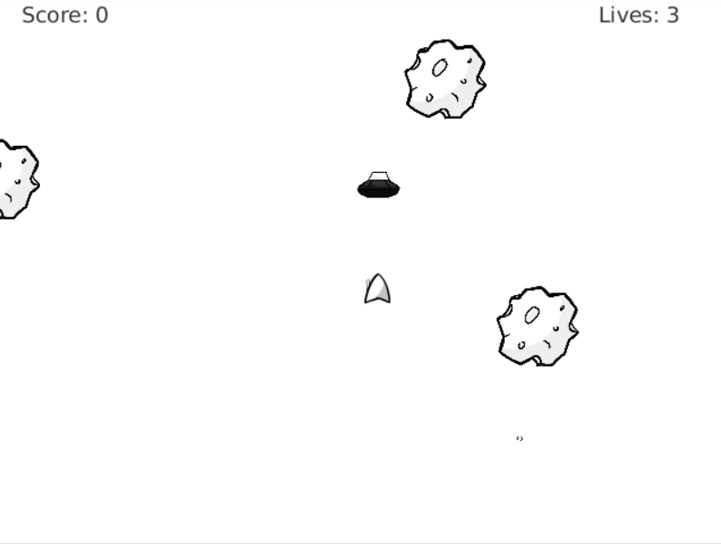
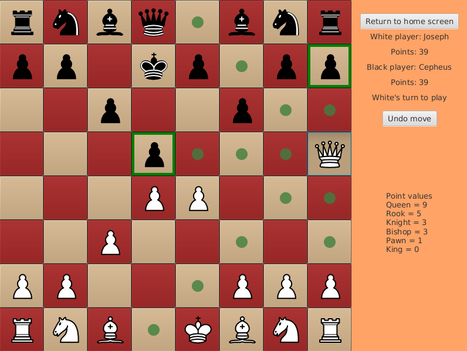
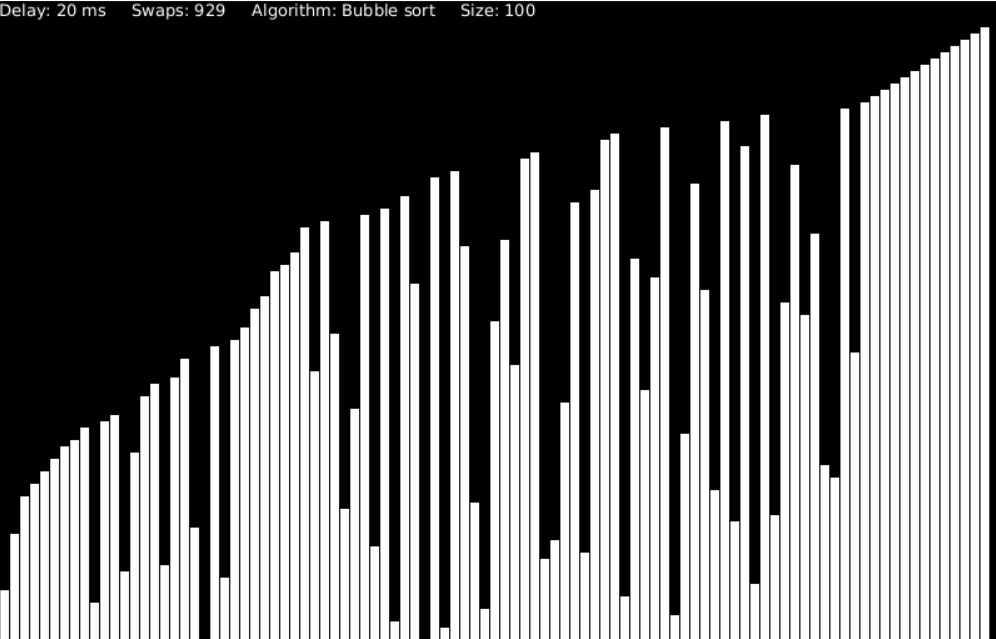

About Me
I'm a second-year student at University of Georgia persuing a B.S. in Computer Science.
I currently have an interest in combinatronics as well as data science, and I am actively
looking for opportunities to learn more about these fields.
Asteroids

For my Software Development course (CS1302), we were asked to make a clone
of a given list of arcade games, and I chose to go with Asteroids. This
game was made in Javafx 8. We used a simple physics engine to handle
collisions.
Chess

For my Software Development course (CS1302), we were tasked to make a
board game, and I chose to develop chess. This game was made in Javafx 8.
It includes both player vs player, player vs computer, and even computer vs
computer settings. The computer player was made using a simple machine learning
algorithm(minimax) and uses alpha-beta pruning to improve its performance.
The computer player also includes an option for varying difficulty levels.
Sorting Simulation

I created a sorting simulation application using Javafx to improve my
knowledge on both sorting algorithms and front-end design. I also used
this to teach and explain to peers how different sorting algorithms worked,
their time complexities, and their stability.